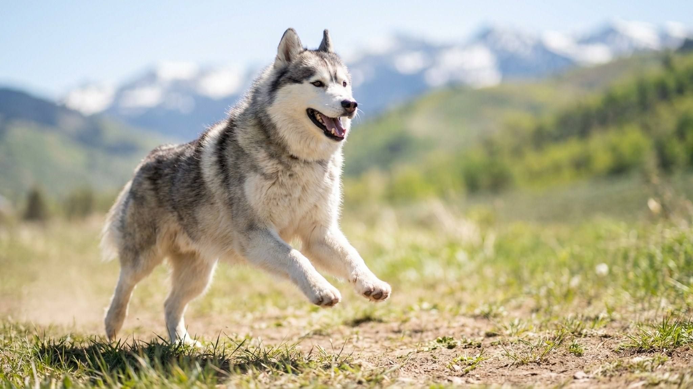

Покупатель видит фото: маленькая собака с окрасом хаски и голубыми глазами. Такой и ждут. Только щенок помски первого поколения вырастает от 3 до 14 кг, и точную цифру не назовёт ни заводчик, ни ДНК-тест. Ниже: что реально наследует помски от хаски и шпица, как это влияет на быт и кому порода подходит, а кому нет.
🐾 Ваш питомец — помски?
Заведите профиль в AnimaLife: приложение запомнит породу, возраст и вес и будет подсказывать по уходу именно для неё. Вопросы AI-ветеринару — круглосуточно и бесплатно.
Завести профиль → Завести в MAX →
У вас iPhone? AnimaLife есть в App Store
Помски (Pomsky) получается от скрещивания сибирского хаски и померанского шпица. Порода дизайнерская: стандарта нет, клубы существуют, но без жёсткого отбора по рабочим качествам или строгого контроля здоровья родителей.
Поколения F1 и F2 ведут себя по-разному:
Заводчик, который обещает «точно вырастет до 6 кг», либо ошибается, либо вводит в заблуждение. Смотрите на родителей, а не на прогноз.
Помски наследует черты обеих пород, и не всегда в удобной пропорции.
От хаски идут высокая активность, голосистость (вой, «разговоры», громкий лай) и склонность к побегу: хаски рождены бегать, и это никуда не девается в уменьшенной версии. От шпица добавляется настороженность к чужим и упрямство при дрессировке. Одни помски легко обучаются, другие испытывают владельца на прочность месяцами.
Важно: высокая энергия и вокализация у этой помеси остаются, даже если собака по габаритам влезла в сумку-переноску. Соседи за стеной это почувствуют раньше вас.
Помски, который не получает нагрузки, начинает справляться со скукой своими методами: жуёт мебель, разносит вещи, воет часами. Всё это предсказуемое следствие недогрузки.
Если времени на регулярные прогулки и занятия нет, помски будет несчастна, и вы вместе с ней.
Обе родительские породы имеют густой двойной подшёрсток. Помски линяет заметно и регулярно, дважды в год давая «взрывную» линьку.
Шерсть будет везде: на одежде, диване, еде. Это одно из базовых условий содержания.
Порода хорошо подойдёт, если вы:
Помски не подойдёт, если вы:
🐾 У вас помски?
AnimaLife соберёт уход под породу: к каким болезням есть склонность, что проверять по возрасту, чем кормить и когда пора к врачу. Бесплатно, прямо в мессенджере.
Собрать план ухода → Собрать в MAX →
У вас iPhone? AnimaLife есть в App Store
🐾 Понравился разбор?
Подпишитесь на канал — каждый день разбираем по одному тревожному симптому у кошек и собак: что в пределах нормы, а когда пора к врачу. Подпишитесь, чтобы не пропустить разбор, который может спасти здоровье вашего питомца.
Материал носит информационный характер и не заменяет очную консультацию ветеринара.